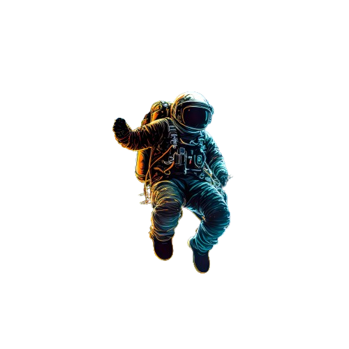

Prêt pour un périple intergalactique ? Choisissez
votre porte d'entrée vers les planètes et laissez-vous séduire par
les secrets célestes. De Mercure à Neptune, chaque page est une
invitation à percer les mystères de notre système solaire.
Mercure est la planète la plus proche du Soleil dans notre système
solaire. Elle est caractérisée par des températures extrêmes,
atteignant jusqu'à 430 degrés Celsius le jour et chutant à environ
-180 degrés Celsius la nuit en raison de l'absence d'une atmosphère
significative pour retenir la chaleur. Mercure est également la plus
petite planète du système solaire.
Vénus est la deuxième planète du système solaire,
souvent
appelée la "sœur jumelle de la Terre" en raison de sa taille
similaire.Son atmosphère dense est principalement composée de
dioxyde de carbone,
provoquant un effet de serre intense et des températures de surface
extrêmement élevées.
La Terre est la troisième planète du système solaire
, située à
une distance d'environ 150 millions de kilomètres du Soleil
, et
elle est le seul corps céleste connu pour abriter la vie.